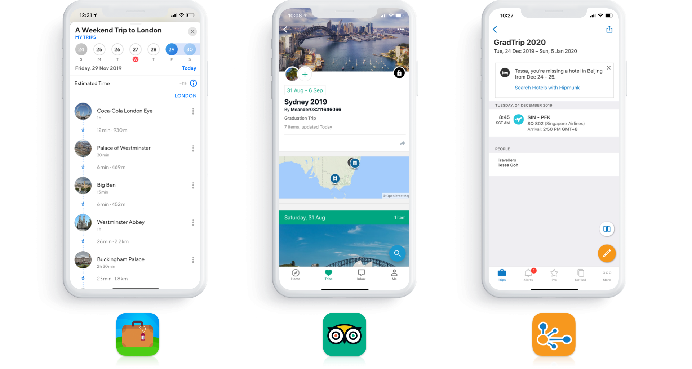
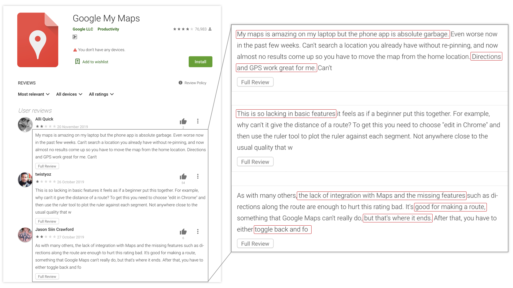
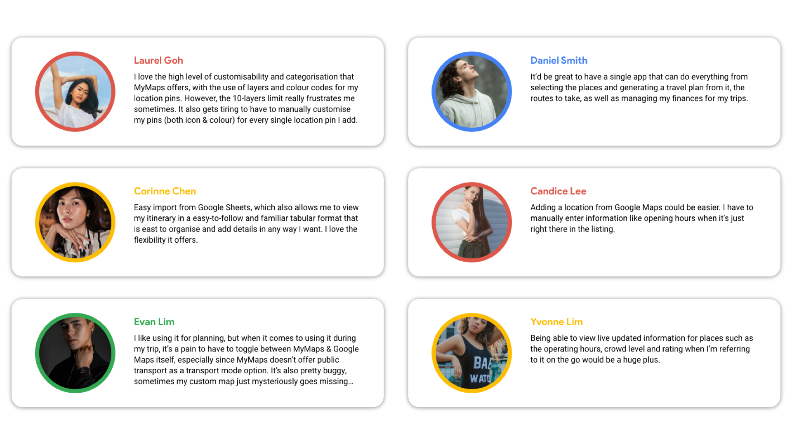
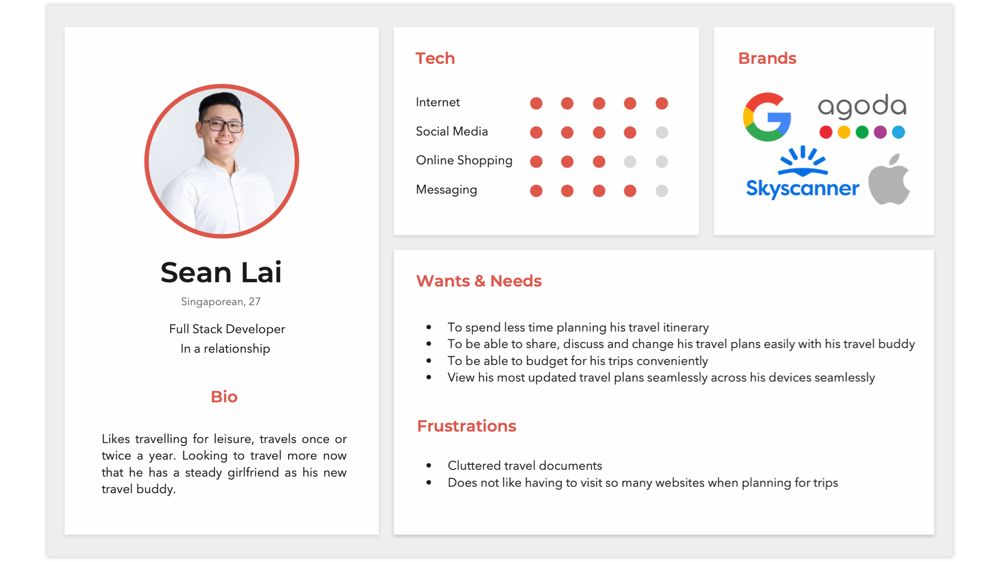
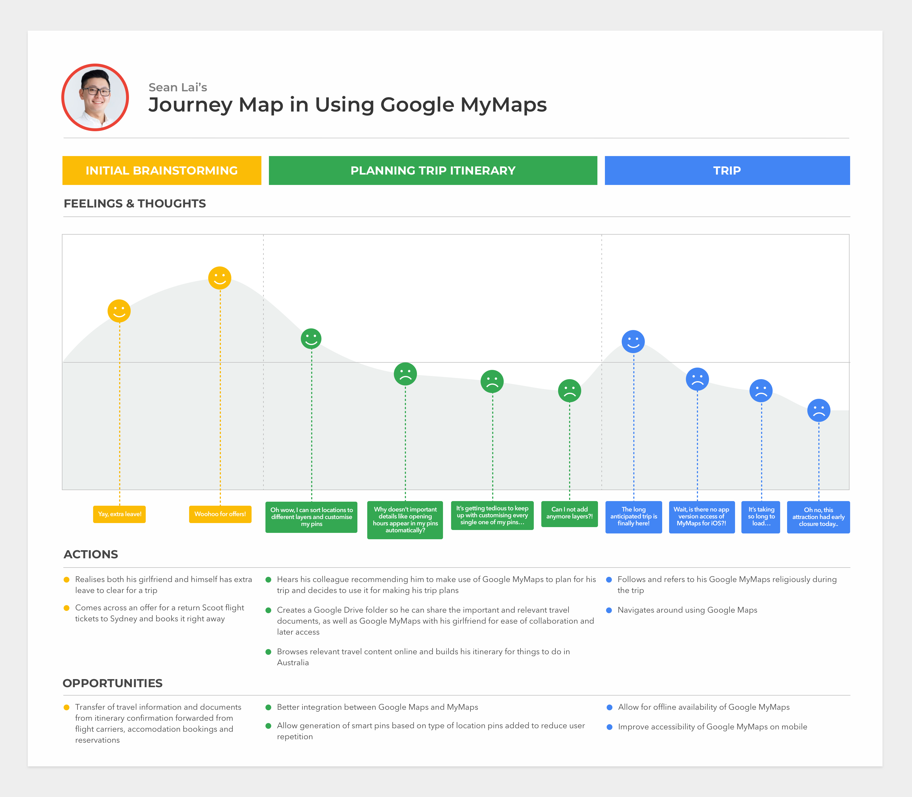
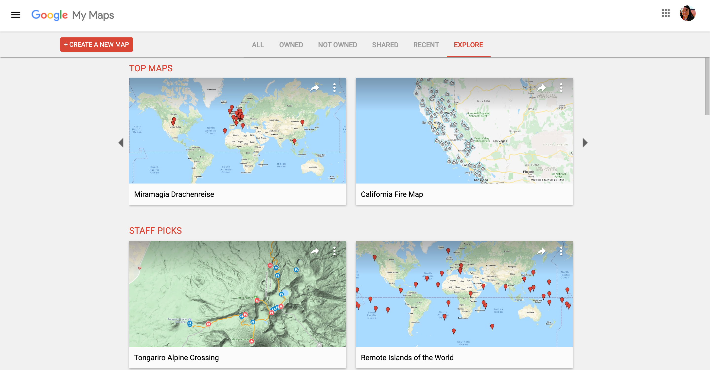

Improving Google MyMaps

Overview
Google MyMaps is an online mapping platform available on both web and mobile. It allows its users to create custom maps and share them for collaboration. A large user group are travellers who use the app for travel planning and navigating on the go. With a rising number of travel planning sites and apps, a redesign is overdue for the platform to stay competitive in the long run. In this personal project, I derived three potential improvements for the platform. I arrived at these solutions by analysing other existing travel apps and conducting user research to understand how Google MyMaps was lacking compared to its competitors.Scope
Personal ProjectYear
2019The Focus
Users who use the platform for their travel trips, which generally consists of three stages:
- the initial brainstorming,
- creation of the trip itinerary and
- navigation during travel.
Competitive Analysis
I looked into popular travel planning apps to understand what makes a travel planning app great. The three well-received apps I narrowed down in my research were Sygic Travel, TripAdvisor and TripIt.

Unsurprisingly, each of these apps has a solid feature that sets it apart from other apps on the market:
- Sygic Travel: Seamless GPS navigation with the travel itinerary
- TripAdvisor: Smart suggestions, readily available reviews and forums, ease of booking
- TripIt: One-stop depository of the travel itinerary and booking confirmations
The Main Getaway
These apps are all itinerary-based, contrasting the GoogleMyMaps platform, which is layer-based. Even though allowing users to sort their saved places into different layers offers more customizability, this sorting process can be manual and tedious.
User Research
To improve the platform, I needed to know why existing users were dissatisfied with Google MyMaps.
App Ratings & Reviews

Google MyMaps’s mobile app was only available for Android. Looking through the app listing in the Google Play Store, “the lack of integration with Google Maps” was common feedback I spotted (which echoed my brief experience with the platform).
Qualitative Feedback
I also conducted a short online survey with 15-20 participants using SurveyMonkey to obtain more feedback on the platform.
The feedback gathered could be summarised as such:

Insights
After conducting the competitive analysis and user research, I summarised the user needs and frustrations in a user persona.

I also mapped out the user journey, splitting it into the three stages identified prior, and listed the opportunities for improvements accordingly for each.

Conceptualisation
It was clear to me at this point what the focus areas were for improving the platform, and they were to:
- better the integration of the platform with Google Maps,
- optimise the platform for itinerary planning and
- improve the platform’s accessibility on mobile while travelling on the go
Wireframing
I started conceptualising improvements by first creating low-fi wireframes on pen and paper.
The Solution
My suggested improvements adhere to the approach outlined from my former analysis and apply to both the desktop and mobile platforms.
Desktop
- Ease of adding locations directly to custom maps created in Google MyMaps from location listings in Google Maps.
- Addition of trip-oriented data fields to alleviate other aspects of trip planning (e.g. Budgeting)
- Offering an alternate day itinerary view (on top of the existing layer view) of pinned locations in custom maps for travel planning
Mobile
For mobile, I propose to build Google MyMaps as a feature in the existing Google Maps mobile app. Users can then have full access to data available on Google Maps while referring to their itinerary when travelling on the go.
Evaluation
Areas for Improvement
My mobile solution assumes that mobile access is mainly for referencing the itinerary while navigating on the go during travel. However, this may be a skewed assumption since unpredictability is part and parcel of travel. One might have to adjust the itinerary by adding stops or even shift plans when needed. A more polished solution, therefore, would be required.
Re-evaluating Assumptions
The basis of this case study focuses only on one particular user group on the platform; those who use it for their travel planning. However, Google MyMaps is also often used to present map data. It might not have been fair thus to only compare the platform with other travel planning apps since they do not share the same primary use case.
